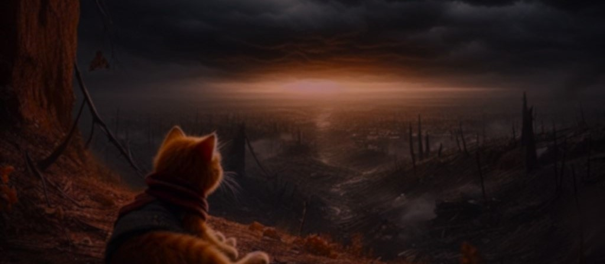
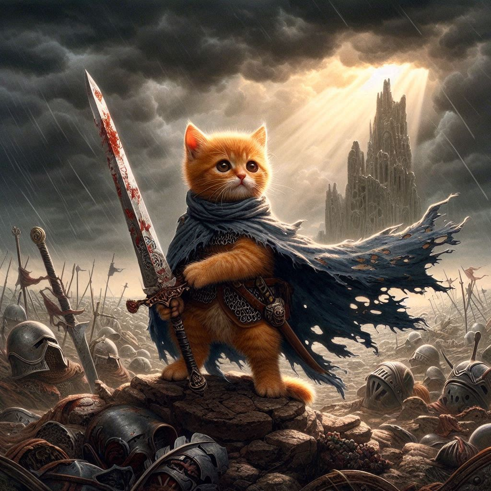

The wisdom of cats invites us to be more independent, to trust our instincts and to embrace our individuality. On this page, you will find inspirational stories, motivational quotes, scriptures to read and remember that God loves us and also thoughtful questions to ask ourselves every day to maintain a good mindset.

